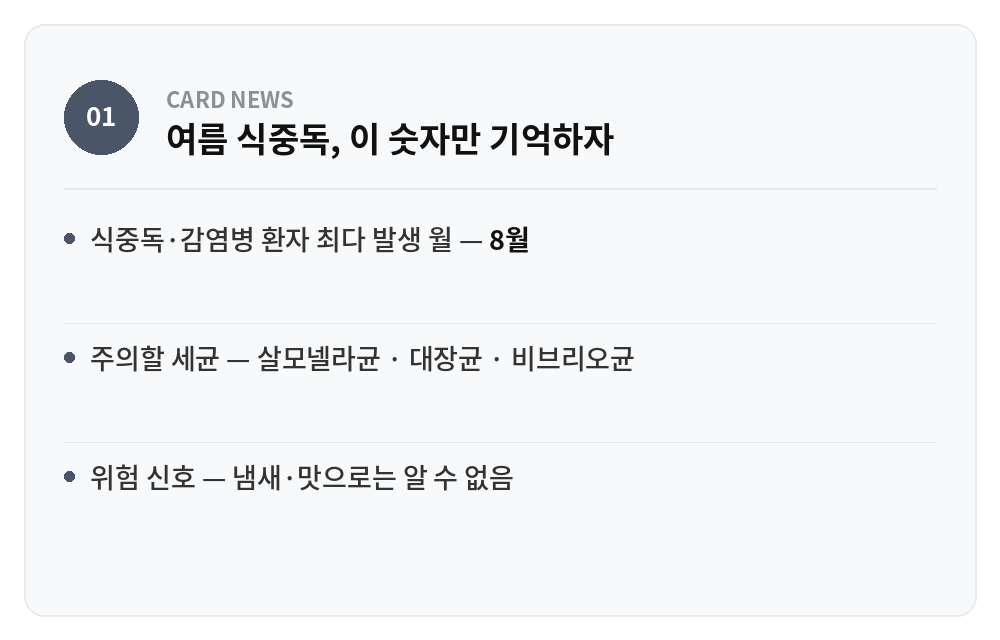
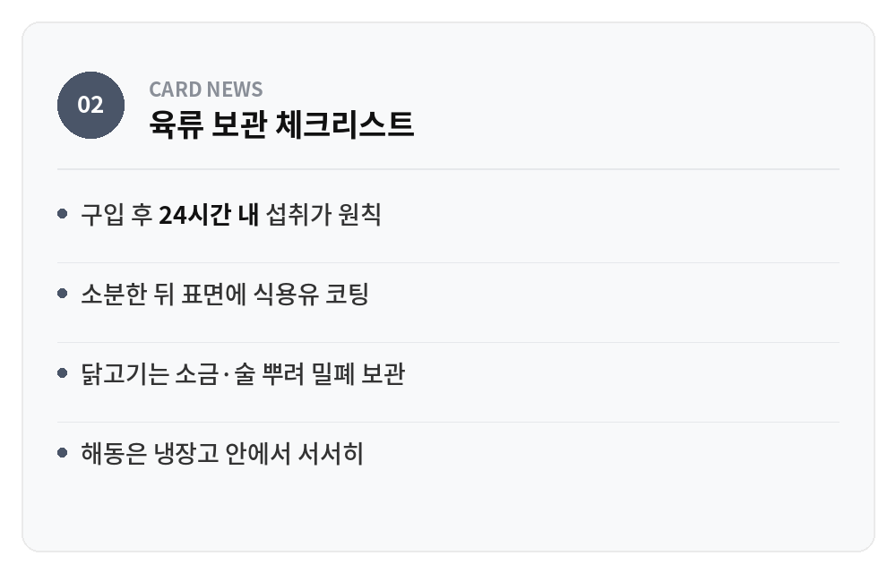
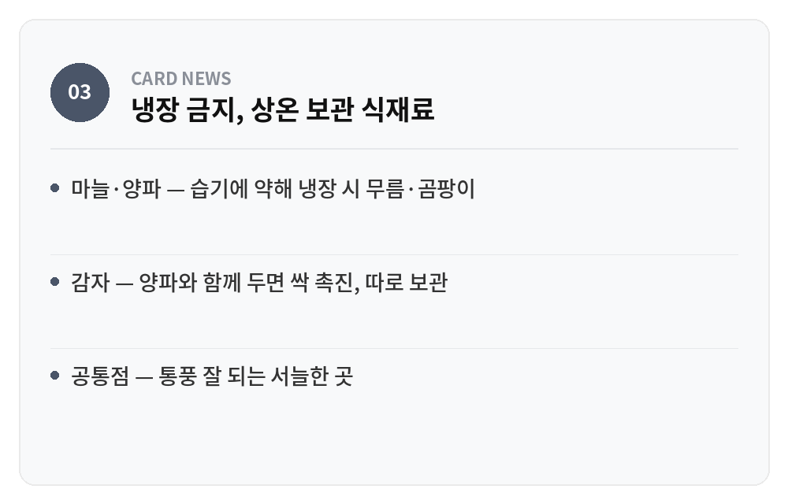
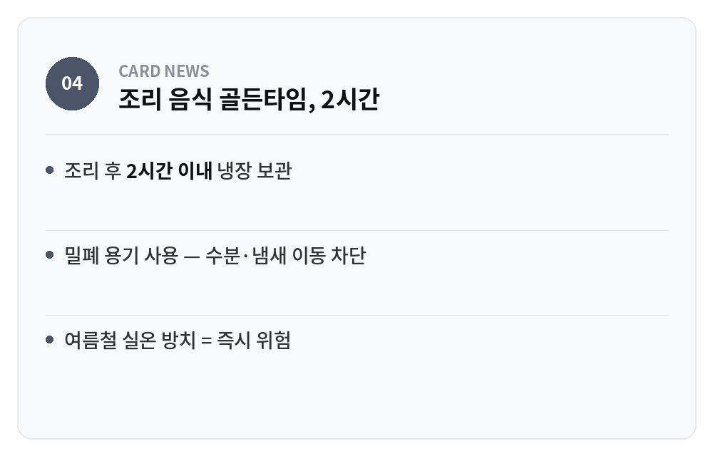
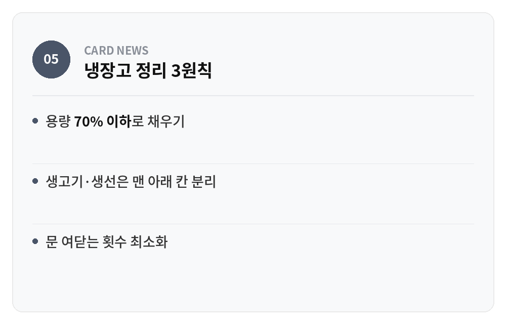

음식이 상할까 봐 일단 냉장고부터 열어젖히는 습관, 낯설지 않을 것이다. 틀린 반응은 아니지만 정답도 아니다. 마늘은 냉장고에 들어가는 순간부터 물러지기 시작하고, 소분하지 않은 고기는 얼렸다가 해동하면 절반은 버리게 된다. 여름철 식중독은 온도를 몰라서 생기기보다, 무엇을 어디에 두어야 하는지 순서를 몰라서 생기는 경우가 훨씬 많다.
건강보험심사평가원 통계를 보면 식중독과 감염병 환자가 가장 많이 발생한 달은 해마다 8월이었다. 기온과 습도가 함께 오르면 살모넬라균, 대장균, 비브리오균이 번식하기 가장 좋은 환경이 만들어지기 때문이다. 문제는 이 균들이 냄새나 맛으로 티가 나지 않는다는 데 있다. 육안으로 멀쩡해 보이는 반찬이 실은 세균 배양 접시나 다름없는 경우가 여름엔 흔하다.

여름 식중독, 이 숫자만 기억하자
· 식중독·감염병 환자 최다 발생 월 — 8월
· 주의할 세균 — 살모넬라균 · 대장균 · 비브리오균
· 위험 신호 — 냄새·맛으로는 알 수 없음
돼지고기와 소고기는 구입 후 24시간 안에 먹는 게 가장 안전하다. 그렇지 못하다면 먹을 만큼씩 소분해서 냉동해야 한다. 이때 랩이나 비닐팩에 담기 전 고기 표면에 식용유를 얇게 발라주는 과정을 건너뛰면 안 된다. 기름막이 산소와의 접촉을 늦춰 산화와 세균 번식 속도를 함께 낮춰주기 때문이다. 닭고기는 소금과 술을 살짝 뿌려 밀폐 용기에 넣으면 잡내와 세균을 동시에 잡을 수 있다. 3일 안에 먹을 육류라면 냉동이 아니라 같은 방식으로 코팅해 냉장 보관하는 편이 맛도 낫다. 해동은 반드시 냉장고 안에서 천천히 해야 한다. 실온에 꺼내두는 순간, 표면부터 세균이 증식하기 시작한다.

육류 보관 체크리스트
· 구입 후 24시간 내 섭취가 원칙
· 소분한 뒤 표면에 식용유 코팅
· 닭고기는 소금·술 뿌려 밀폐 보관
· 해동은 냉장고 안에서 서서히
모든 식재료를 냉장고에 넣는 게 정답이라 생각하면 오산이다. 마늘과 양파가 대표적인 예외다. 냉장고 안의 습기를 흡수하면서 무르기 쉽고, 오히려 싹이 트거나 곰팡이가 피기 쉬워진다. 통풍이 잘 되는 서늘한 상온에 보관하는 편이 훨씬 오래간다. 감자 역시 마찬가지인데, 양파와 함께 두면 양파에서 나오는 가스 때문에 싹이 더 빨리 자란다는 점까지 겹친다. 냉장고는 만능 보관함이 아니라, 식재료마다 다른 기준을 적용해야 하는 공간이라는 사실을 기억해두면 여름 한철 장바구니 손실을 크게 줄일 수 있다.

냉장 금지, 상온 보관 식재료
· 마늘·양파 — 습기에 약해 냉장 시 무름·곰팡이
· 감자 — 양파와 함께 두면 싹 촉진, 따로 보관
· 공통점 — 통풍 잘 되는 서늘한 곳
조리한 음식을 식힌 뒤 냉장고에 넣으라는 조언은 맞지만, 여기서 '식힌다'는 말의 기준이 애매하다. 정확한 기준은 2시간이다. 조리가 끝난 음식은 2시간 이내에 밀폐 용기에 담아 냉장 보관해야 한다. 밀폐 용기를 쓰는 이유는 단순히 위생 때문만이 아니다. 수분 손실을 줄이고, 냄새가 다른 반찬으로 옮겨가는 것도 함께 막아준다. 여름철 실온은 이미 세균 번식에 최적화된 온도대이기 때문에, 식탁 위에 국이나 찌개를 오래 올려두는 습관부터 먼저 고쳐야 한다.

조리 음식 골든타임, 2시간
· 조리 후 2시간 이내 냉장 보관
· 밀폐 용기 사용 — 수분·냄새 이동 차단
· 여름철 실온 방치 = 즉시 위험
냉장고 문을 열었을 때 빈틈이 안 보일 정도로 꽉 차 있다면, 그 자체로 위험 신호다. 찬 공기가 순환하지 못하면 냉장고 내부 온도가 구역마다 고르지 않게 유지된다. 특히 안쪽 깊숙한 칸은 시원해도 문쪽이나 앞쪽은 생각보다 미지근한 경우가 많다. 용량의 70% 이하로 채우는 것이 원칙이다. 여기에 생고기와 생선은 육즙이 다른 식재료에 닿지 않도록 맨 아래 칸이나 전용 용기에 따로 두어야 교차 오염을 막을 수 있다. 냉장고 문을 자주 여닫는 습관도 내부 온도를 흔드는 요인이니, 무엇을 꺼낼지 미리 정하고 여는 편이 낫다.

냉장고 정리 3원칙
· 용량 70% 이하로 채우기
· 생고기·생선은 맨 아래 칸 분리
· 문 여닫는 횟수 최소화
여름철 음식 보관은 결국 냉장고 온도를 낮추는 문제가 아니라, 무엇을 어디에 두어야 하는지 판단하는 문제다. 오늘 냉장고 문을 열어 마늘 옆에 놓인 양파부터 상온으로 옮겨보자. 그 작은 순서 하나가 식중독과 신선함 사이의 경계를 가른다. 혹시 나만 몰랐던 보관법이 있었다면, 댓글로 알려주시길.